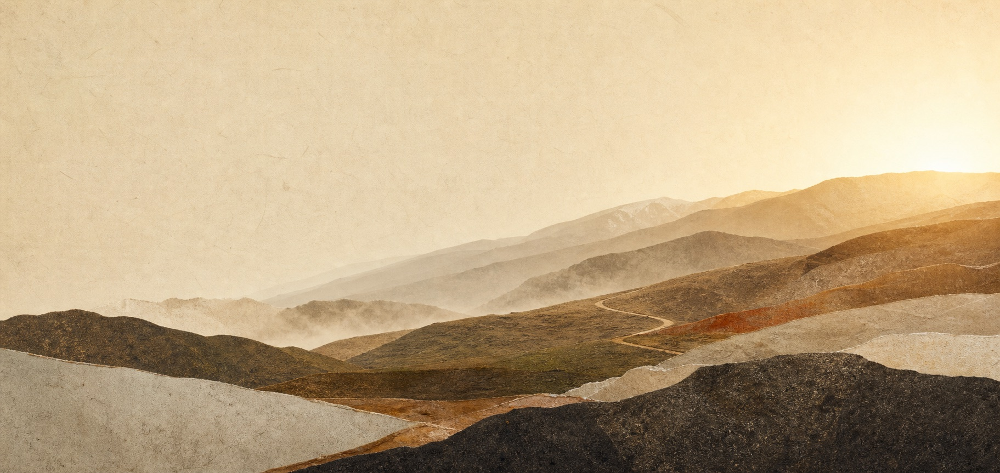

JOURNAL 001
AIを学ぶ段階から、AIで事業と仕組みをつくる段階へ。
OpenClaw／PO1の開発を続けながら、受託だけではない、自分たちで保有できる事業・コンテンツ・収益源を増やしていく。第一歩はNFT市場の調査から。
最新議事録を読む
問いを持ち寄り、考え、試し、次の景色へ。
3人で育てる、小さな研究会の記録。
AIを学ぶ場から、AIで事業と仕組みをつくる場へ。
OpenClaw／PO1を軸に、自分たちで所有できる収益源を育てる。
最新の定例で見えてきたのは、研究会の次のフェーズでした。話し合いを、ひとつの読み物として辿ります。
OpenClaw／PO1の開発を続けながら、受託だけではない、自分たちで保有できる事業・コンテンツ・収益源を増やしていく。第一歩はNFT市場の調査から。
最新議事録を読む話すことから、試すことへ。現在の記録から見える変化を、これからも時系列で積み重ねていきます。
AIの知識を深めるだけでなく、AIを使って所有できる事業と仕組みをつくる方針を確認。
AI-PMOとしての開発を継続し、研究会の中心プロジェクトとして育てていく。
NFT市場を調べ、AI生成作品の販売可能性・費用・権利・リスクを実践前提で整理する。
行動計画と案件獲得を実践へ移し、人間の判断材料をAIにも共有してルールを継続改善する思想が生まれた。
Koba Amon
Kentaro Nakamura
Kazuo Nakamura
毎週、あるいは隔週で。小さくても途切れない対話が、研究会を前へ進めます。
木場晏門・中村健太郎・中村和雄
中村健太郎・中村和雄
中村健太郎・木場晏門